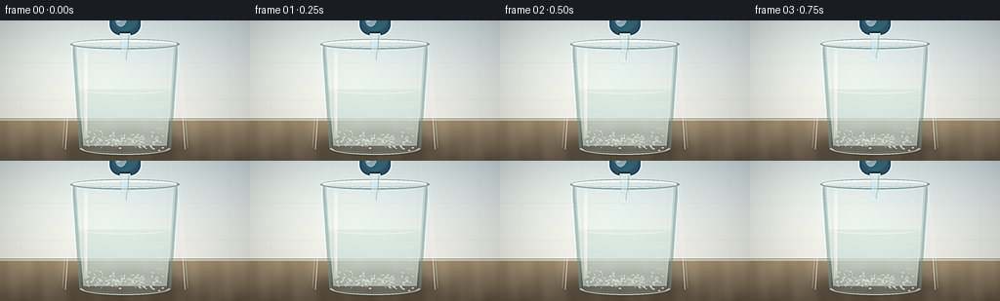
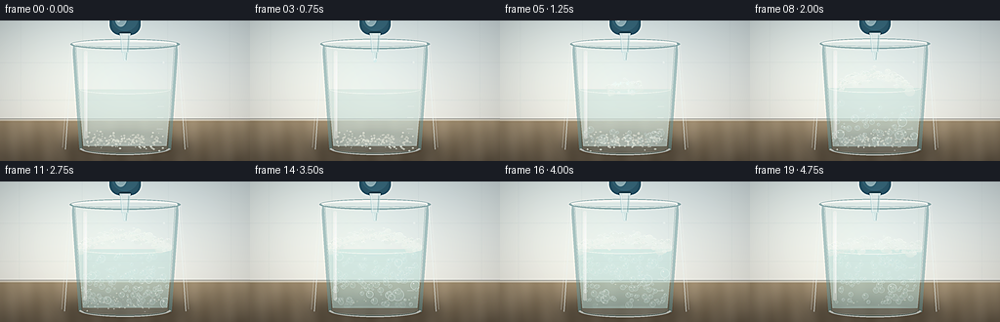
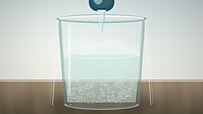
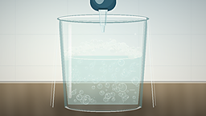
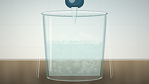
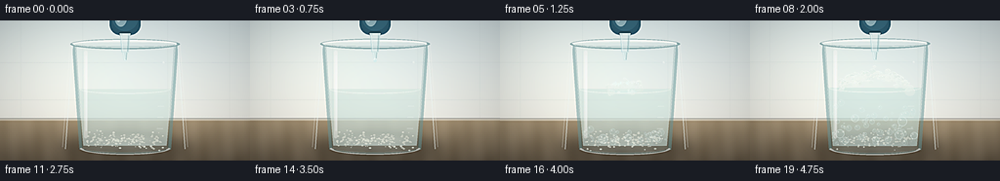
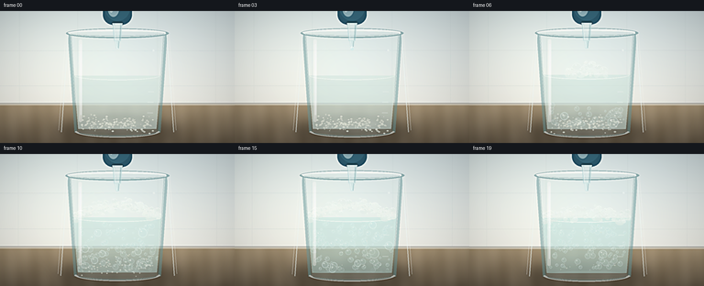

CODING AGENTS AS PIXEL WORLD MODELS
traex/DeepSeek-V4.1-Flash · material_0036
点击播放 · 原生 RGB 像素
逐轮保存的候选
回放视频、检查图与代码变化。
每份候选均可单独播放。实际图片检查记录在下方工具轨迹中。
候选 01播放与检查图
点击播放 · 原生 RGB 像素


展开代码变化
--- 上一保存版本
+++ 本次保存版本
@@ -0,0 +1,489 @@
+from pathlib import Path
+import math
+
+import numpy as np
+from PIL import Image, ImageDraw, ImageFilter
+
+import artifact_io
+
+
+OUT_W, OUT_H = 256, 144
+FRAMES, FPS = 20, 4.0
+SCALE = 4
+W, H = OUT_W * SCALE, OUT_H * SCALE
+
+
+def clamp(value, lo=0.0, hi=1.0):
+ return max(lo, min(hi, value))
+
+
+def smoothstep(a, b, value):
+ if a == b:
+ return float(value >= b)
+ x = clamp((value - a) / (b - a))
+ return x * x * (3.0 - 2.0 * x)
+
+
+def mix(a, b, amount):
+ return tuple(int(round(a[i] + (b[i] - a[i]) * amount)) for i in range(3))
+
+
+def rgba(color, alpha=255):
+ return tuple(color) + (int(alpha),)
+
+
+def rounded_polygon(draw, points, radius, fill):
+ """Draw a polygon with softened corners by overlaying round end caps."""
+ draw.polygon(points, fill=fill)
+ for point in points:
+ draw.ellipse(
+ (point[0] - radius, point[1] - radius, point[0] + radius, point[1] + radius),
+ fill=fill,
+ )
+
+
+def beaker_edge(y):
+ t = clamp((y - 92) / (530 - 92))
+ return 300 + 30 * t, 724 - 30 * t
+
+
+def build_background():
+ yy = np.arange(H, dtype=np.float32)[:, None]
+ xx = np.arange(W, dtype=np.float32)[None, :]
+ img = np.zeros((H, W, 3), dtype=np.float32)
+
+ wall_t = np.clip(yy / 408.0, 0.0, 1.0)
+ top = np.array([218, 230, 232], dtype=np.float32)
+ low = np.array([244, 242, 234], dtype=np.float32)
+ img[:] = top + (low - top) * wall_t[:, :, None]
+
+ # A soft pool of daylight from the upper left.
+ light = np.exp(-((xx - 238) ** 2 / (2 * 270**2) + (yy - 92) ** 2 / (2 * 230**2)))
+ img += light[:, :, None] * np.array([15, 13, 9], dtype=np.float32)
+
+ # Bench top, with a restrained warm wood grain.
+ bench_mask = np.clip((yy - 402) / 12.0, 0.0, 1.0)
+ bench_t = np.clip((yy - 405) / (H - 405), 0.0, 1.0)
+ bench = np.array([171, 150, 119], dtype=np.float32) * (1 - bench_t[:, :, None])
+ bench += np.array([106, 92, 74], dtype=np.float32) * bench_t[:, :, None]
+ grain = (
+ 4.5 * np.sin(xx * 0.036 + yy * 0.011)
+ + 2.6 * np.sin(xx * 0.093 - yy * 0.007)
+ + 1.4 * np.sin(xx * 0.018 + yy * 0.041)
+ )
+ bench = bench + grain[:, :, None]
+ img = img * (1 - bench_mask[:, :, None]) + bench * bench_mask[:, :, None]
+
+ # Wall tile joints and a thin bench edge.
+ panel = Image.new("RGBA", (W, H), (0, 0, 0, 0))
+ pd = ImageDraw.Draw(panel)
+ for y in (172, 326):
+ pd.line((0, y, W, y), fill=(115, 137, 141, 23), width=2)
+ for x in (84, 338, 686, 940):
+ pd.line((x, 0, x, 404), fill=(115, 137, 141, 19), width=2)
+ pd.line((0, 402, W, 402), fill=(88, 84, 75, 92), width=4)
+ pd.line((0, 409, W, 409), fill=(248, 239, 217, 60), width=3)
+ img = Image.alpha_composite(Image.fromarray(img.astype(np.uint8)).convert("RGBA"), panel)
+ return img
+
+
+def draw_shadow(base):
+ layer = Image.new("RGBA", (W, H), (0, 0, 0, 0))
+ d = ImageDraw.Draw(layer)
+ d.ellipse((244, 478, 780, 566), fill=(45, 38, 29, 104))
+ d.ellipse((345, 502, 675, 558), fill=(34, 30, 24, 74))
+ layer = layer.filter(ImageFilter.GaussianBlur(24))
+ return Image.alpha_composite(base, layer)
+
+
+def body_mask():
+ mask = Image.new("L", (W, H), 0)
+ d = ImageDraw.Draw(mask)
+ d.polygon([(300, 92), (724, 92), (694, 530), (330, 530)], fill=255)
+ d.ellipse((300, 75, 724, 112), fill=255)
+ d.ellipse((330, 505, 694, 548), fill=255)
+ return mask
+
+
+def liquid_polygon(surface_y):
+ left_top, right_top = beaker_edge(surface_y)
+ left_bottom, right_bottom = beaker_edge(514)
+ return [
+ (left_top + 9, surface_y),
+ (right_top - 9, surface_y),
+ (right_bottom - 13, 514),
+ (left_bottom + 13, 514),
+ ]
+
+
+def draw_liquid(base, t):
+ layer = Image.new("RGBA", (W, H), (0, 0, 0, 0))
+ d = ImageDraw.Draw(layer)
+ surface_y = 282 - 5 * smoothstep(1.0, 2.0, t) + 2 * smoothstep(3.6, 4.7, t)
+ left, right = beaker_edge(surface_y)
+
+ clarity = smoothstep(0.8, 3.7, t)
+ liquid_color = mix((217, 230, 222), (192, 225, 218), clarity)
+ alpha = int(168 - 34 * clarity)
+ poly = liquid_polygon(surface_y)
+ d.polygon(poly, fill=rgba(liquid_color, alpha))
+
+ # A shallow ellipse gives the liquid a convincing meniscus.
+ d.ellipse(
+ (left + 9, surface_y - 18, right - 9, surface_y + 18),
+ fill=rgba(mix(liquid_color, (233, 240, 232), 0.30), min(220, alpha + 26)),
+ )
+ d.arc(
+ (left + 12, surface_y - 19, right - 12, surface_y + 19),
+ 8,
+ 172,
+ fill=(247, 252, 244, 155),
+ width=3,
+ )
+
+ # Slight internal depth: cooler toward the bottom of the vessel.
+ depth = Image.new("RGBA", (W, H), (0, 0, 0, 0))
+ dd = ImageDraw.Draw(depth)
+ for i in range(26):
+ yy = surface_y + 28 + i * 9
+ if yy > 514:
+ break
+ a = int(2 + 4 * i / 26)
+ dd.line((338, yy, 686, yy), fill=(57, 115, 112, a), width=9)
+ layer = Image.alpha_composite(layer, depth)
+
+ mask = Image.new("L", (W, H), 0)
+ md = ImageDraw.Draw(mask)
+ md.polygon(poly, fill=255)
+ clipped = Image.new("RGBA", (W, H), (0, 0, 0, 0))
+ clipped.paste(layer, (0, 0), mask)
+ return Image.alpha_composite(base, clipped), surface_y
+
+
+def draw_powder(base, t, surface_y):
+ layer = Image.new("RGBA", (W, H), (0, 0, 0, 0))
+ d = ImageDraw.Draw(layer)
+ rng = np.random.default_rng(731)
+ dissolve = smoothstep(0.85, 3.8, t)
+ count = int(170 * (1.0 - 0.92 * dissolve))
+ for i in range(count):
+ x = rng.uniform(356, 668)
+ y = rng.uniform(470, 518) + rng.normal(0, 8)
+ # Early bubbles gently disturb and lift the finer grains.
+ if t > 1.0 and i % 7 == 0:
+ age = max(0.0, t - 1.0)
+ y -= age * rng.uniform(15, 38)
+ x += math.sin(age * 4.2 + i) * 5
+ r = rng.uniform(1.7, 5.2) * (1 - 0.35 * dissolve)
+ a = int(115 + rng.uniform(30, 105) * (1 - dissolve))
+ tint = int(rng.uniform(-8, 10))
+ color = (242 + tint, 239 + tint, 223 + tint)
+ d.ellipse((x - r, y - r * 0.65, x + r, y + r * 0.65), fill=rgba(color, a))
+
+ # The fine sediment haze fades as the reaction proceeds.
+ if dissolve < 0.98:
+ haze = Image.new("RGBA", (W, H), (0, 0, 0, 0))
+ hd = ImageDraw.Draw(haze)
+ hd.ellipse((355, 464, 670, 525), fill=(241, 239, 225, int(50 * (1 - dissolve))))
+ haze = haze.filter(ImageFilter.GaussianBlur(16))
+ layer = Image.alpha_composite(layer, haze)
+ return Image.alpha_composite(base, layer)
+
+
+def bubble_events():
+ rng = np.random.default_rng(20261111)
+ events = []
+ for i in range(255):
+ birth = float(rng.uniform(0.72, 4.55))
+ x = float(rng.uniform(344, 680))
+ r = float(rng.uniform(2.6, 13.5))
+ if i % 29 == 0:
+ r = float(rng.uniform(13.0, 23.0))
+ speed = float(rng.uniform(52, 132)) + r * 2.0
+ phase = float(rng.uniform(0, math.tau))
+ wobble = float(rng.uniform(2.5, 11.0))
+ life = float(rng.uniform(2.6, 5.0))
+ events.append((birth, x, r, speed, phase, wobble, life))
+ return events
+
+
+def draw_bubbles(base, t, surface_y):
+ layer = Image.new("RGBA", (W, H), (0, 0, 0, 0))
+ d = ImageDraw.Draw(layer)
+ for idx, (birth, x0, radius, speed, phase, wobble, life) in enumerate(bubble_events()):
+ age = t - birth
+ if age < 0 or age > life:
+ continue
+ y = 510 - speed * age
+ if y < surface_y + 12 + radius:
+ continue
+ x = x0 + math.sin(age * 4.6 + phase) * wobble
+ grow = 1.0 + 0.11 * math.sin(min(age, 0.7) * 7.0)
+ r = radius * grow
+ fade = smoothstep(0.0, 0.12, age) * (1.0 - smoothstep(life - 0.35, life, age))
+ alpha = int((70 + 90 * fade) * fade)
+ fill_a = int(13 + 20 * fade)
+ d.ellipse((x - r, y - r, x + r, y + r), fill=(213, 241, 237, fill_a))
+ d.ellipse(
+ (x - r, y - r, x + r, y + r),
+ outline=(244, 253, 248, alpha),
+ width=max(1, int(1 + r * 0.075)),
+ )
+ if r > 5:
+ hr = max(1.1, r * 0.16)
+ hx = x - r * 0.36
+ hy = y - r * 0.42
+ d.ellipse((hx - hr, hy - hr, hx + hr, hy + hr), fill=(255, 255, 250, int(alpha * 0.9)))
+
+ mask = Image.new("L", (W, H), 0)
+ md = ImageDraw.Draw(mask)
+ md.polygon(liquid_polygon(surface_y), fill=255)
+ clipped = Image.new("RGBA", (W, H), (0, 0, 0, 0))
+ clipped.paste(layer, (0, 0), mask)
+ return Image.alpha_composite(base, clipped)
+
+
+def draw_foam(base, t, surface_y):
+ # Foam rises quickly around the impact and then slowly collapses.
+ rise = smoothstep(0.96, 2.15, t)
+ settle = smoothstep(3.45, 4.72, t)
+ strength = rise * (1.0 - 0.64 * settle)
+ if strength <= 0.01:
+ return base
+
+ layer = Image.new("RGBA", (W, H), (0, 0, 0, 0))
+ d = ImageDraw.Draw(layer)
+ left, right = beaker_edge(surface_y)
+ width = right - left - 32
+ rng = np.random.default_rng(9247)
+
+ # A low, rounded foam bank first appears at the impact point.
+ center_height = 56 * strength
+ spread = smoothstep(1.05, 2.6, t)
+ for i in range(155):
+ u = rng.uniform(-0.5, 0.5)
+ local_spread = 0.17 + 0.33 * spread
+ if abs(u) > local_spread:
+ continue
+ x = (left + right) * 0.5 + u * width
+ mound = max(0.0, 1.0 - abs(u) / max(local_spread, 0.01))
+ mound = mound ** 0.58
+ y = surface_y - center_height * mound + rng.normal(0, 8 + 5 * mound)
+ r = rng.uniform(4.0, 13.5)
+ if rng.random() < 0.18:
+ r *= 1.55
+ a = int((115 + rng.uniform(25, 100)) * (0.78 + 0.22 * strength))
+ col = mix((230, 237, 229), (251, 252, 244), rng.uniform(0.18, 0.9))
+ d.ellipse((x - r, y - r * 0.78, x + r, y + r * 0.78), fill=rgba(col, a))
+ d.arc(
+ (x - r, y - r * 0.78, x + r, y + r * 0.78),
+ 194,
+ 344,
+ fill=(255, 255, 249, min(230, a + 30)),
+ width=2,
+ )
+ if r > 9:
+ d.ellipse(
+ (x - r * 0.35, y - r * 0.48, x - r * 0.05, y - r * 0.22),
+ fill=(255, 255, 252, 150),
+ )
+
+ # Tiny bright froth links the larger bubbles into a continuous head.
+ for i in range(170):
+ x = rng.uniform(left + 19, right - 19)
+ u = (x - (left + right) * 0.5) / width
+ local_spread = 0.18 + 0.32 * spread
+ if abs(u) > local_spread:
+ continue
+ mound = max(0.0, 1.0 - abs(u) / local_spread) ** 0.55
+ y = surface_y - center_height * mound + rng.normal(0, 7)
+ r = rng.uniform(1.5, 4.3)
+ d.ellipse(
+ (x - r, y - r, x + r, y + r),
+ fill=(249, 250, 242, int(rng.uniform(120, 215) * strength)),
+ )
+
+ # Clip foam to the glass vessel so it never spills through the walls.
+ mask = body_mask()
+ clipped = Image.new("RGBA", (W, H), (0, 0, 0, 0))
+ clipped.paste(layer, (0, 0), mask)
+ return Image.alpha_composite(base, clipped)
+
+
+def draw_impact(base, t, surface_y):
+ if t < 0.92 or t > 1.9:
+ return base
+ layer = Image.new("RGBA", (W, H), (0, 0, 0, 0))
+ d = ImageDraw.Draw(layer)
+ age = t - 0.92
+ fade = 1.0 - smoothstep(0.0, 0.92, age)
+ cx = 512
+
+ for ring, delay in enumerate((0.0, 0.14, 0.28)):
+ rr = 18 + 145 * max(0.0, age - delay)
+ if rr > 165:
+ continue
+ a = int(135 * fade * (1.0 - ring * 0.22))
+ d.arc(
+ (cx - rr, surface_y - rr * 0.23, cx + rr, surface_y + rr * 0.23),
+ 8,
+ 172,
+ fill=(235, 251, 247, a),
+ width=3,
+ )
+
+ # A small crown of splash droplets at the moment of contact.
+ if age < 0.36:
+ rng = np.random.default_rng(88)
+ for i in range(12):
+ ang = rng.uniform(-2.8, -0.34)
+ dist = rng.uniform(4, 20) + age * rng.uniform(70, 155)
+ x = cx + math.cos(ang) * dist
+ y = surface_y - 2 + math.sin(ang) * dist * 0.55
+ r = rng.uniform(1.4, 4.0)
+ d.ellipse((x - r, y - r * 1.4, x + r, y + r * 1.4), fill=(244, 253, 248, 180))
+
+ clipped = Image.new("RGBA", (W, H), (0, 0, 0, 0))
+ clipped.paste(layer, (0, 0), body_mask())
+ return Image.alpha_composite(base, clipped)
+
+
+def draw_glass(base):
+ layer = Image.new("RGBA", (W, H), (0, 0, 0, 0))
+ d = ImageDraw.Draw(layer)
+
+ # Rear glass tint.
+ d.polygon([(300, 92), (724, 92), (694, 530), (330, 530)], fill=(191, 224, 225, 29))
+ d.ellipse((330, 505, 694, 548), fill=(203, 230, 229, 50))
+
+ # Thick side walls and their crisp inner/outer highlights.
+ for side in (-1, 1):
+ p_top = (300 if side < 0 else 724, 92)
+ p_bottom = (330 if side < 0 else 694, 530)
+ outer = p_top[0]
+ inner = p_top[0] - side * 10
+ d.line((p_top, p_bottom), fill=(109, 156, 158, 124), width=12)
+ d.line((outer + side * 3, 94, outer + side * 33, 528), fill=(245, 252, 248, 145), width=4)
+ d.line((inner, 98, inner - side * 27, 523), fill=(91, 143, 145, 76), width=3)
+ d.line((outer + side * 13, 102, outer + side * 44, 520), fill=(255, 255, 250, 82), width=3)
+
+ # Top rim, drawn as two offset ellipses to suggest wall thickness.
+ d.ellipse((288, 76, 736, 118), outline=(102, 146, 149, 152), width=12)
+ d.ellipse((300, 84, 724, 111), outline=(250, 254, 249, 220), width=5)
+ d.arc((293, 79, 731, 114), 188, 344, fill=(255, 255, 252, 225), width=7)
+ d.arc((308, 92, 716, 108), 7, 168, fill=(83, 135, 138, 78), width=3)
+
+ # Bottom is intentionally heavier, as real laboratory glass appears.
+ d.arc((326, 497, 698, 551), 4, 176, fill=(238, 248, 245, 158), width=10)
+ d.arc((342, 509, 682, 546), 8, 172, fill=(87, 132, 134, 95), width=4)
+
+ # A long vertical reflection and a smaller curved reflection.
+ d.rounded_rectangle((344, 124, 358, 484), radius=8, fill=(255, 255, 252, 102))
+ d.rounded_rectangle((350, 144, 355, 454), radius=3, fill=(255, 255, 255, 152))
+ d.arc((648, 168, 690, 470), 256, 286, fill=(250, 255, 252, 100), width=8)
+
+ # Small etched volume ticks on the right wall.
+ for i, y in enumerate((352, 398, 444)):
+ x0, x1 = (646 - i * 2, 671 - i * 2)
+ d.line((x0, y, x1, y), fill=(239, 248, 244, 105), width=3)
+ return Image.alpha_composite(base, layer)
+
+
+def draw_pipette(base, t):
+ layer = Image.new("RGBA", (W, H), (0, 0, 0, 0))
+ d = ImageDraw.Draw(layer)
+ cx = 512
+
+ # Rubber bulb at the top edge and a tapered glass delivery tube.
+ d.rounded_rectangle((449, -75, 575, 59), radius=43, fill=(38, 83, 103, 245))
+ d.ellipse((457, -72, 567, 43), fill=(44, 94, 114, 240))
+ d.ellipse((469, -57, 520, 25), fill=(87, 137, 153, 145))
+ d.ellipse((474, -50, 496, 6), fill=(145, 190, 201, 104))
+ d.rounded_rectangle((487, 45, 537, 63), radius=8, fill=(32, 67, 80, 245))
+
+ d.polygon([(490, 53), (534, 53), (527, 131), (497, 131)], fill=(193, 224, 225, 128))
+ d.polygon([(502, 54), (522, 54), (518, 130), (506, 130)], fill=(226, 241, 239, 105))
+ d.line((498, 62, 503, 129), fill=(252, 255, 251, 170), width=3)
+ d.line((526, 63, 522, 129), fill=(74, 126, 132, 112), width=2)
+ d.polygon([(501, 128), (523, 128), (518, 164), (506, 164)], fill=(205, 231, 230, 135))
+ d.line((505, 132, 509, 161), fill=(252, 255, 253, 182), width=2)
+ d.line((518, 132, 516, 161), fill=(80, 131, 137, 104), width=2)
+
+ # The first acid drop forms, detaches, and falls to the liquid.
+ if t < 0.72:
+ grow = smoothstep(0.0, 0.48, t)
+ r = 3.0 + 8.5 * grow
+ top = 161 + 2.0 * grow
+ d.ellipse((cx - r, top, cx + r, top + r * 1.6), fill=(209, 237, 239, 155))
+ d.arc((cx - r, top, cx + r, top + r * 1.6), 198, 340, fill=(255, 255, 252, 220), width=2)
+ d.ellipse((cx - r * 0.42, top + r * 0.25, cx - r * 0.03, top + r * 0.72), fill=(255, 255, 255, 160))
+ elif t < 1.12:
+ u = clamp((t - 0.72) / 0.40)
+ y = 164 + (282 - 164) * (u * u)
+ stretch = 1.0 + 0.75 * math.sin(u * math.pi)
+ r = 7.0
+ d.ellipse(
+ (cx - r, y - r * stretch, cx + r, y + r * stretch),
+ fill=(211, 239, 240, 148),
+ )
+ d.arc(
+ (cx - r, y - r * stretch, cx + r, y + r * stretch),
+ 195,
+ 338,
+ fill=(255, 255, 252, 218),
+ width=2,
+ )
+ d.ellipse((cx - 3.2, y - r * 0.55, cx - 0.4, y - r * 0.1), fill=(255, 255, 255, 165))
+
+ return Image.alpha_composite(base, layer)
+
+
+def add_atmosphere(image):
+ arr = np.asarray(image.convert("RGB"), dtype=np.float32)
+ yy, xx = np.mgrid[0:H, 0:W].astype(np.float32)
+ nx = (xx - W * 0.5) / (W * 0.56)
+ ny = (yy - H * 0.47) / (H * 0.62)
+ vignette = np.clip(1.0 - 0.16 * (nx * nx + ny * ny), 0.78, 1.0)
+ arr *= vignette[:, :, None]
+ # A very light cyan lift in the glass and warm lift on the bench.
+ arr[:, :, 1] += 1.2
+ arr[:, :, 2] += 1.4
+ return Image.fromarray(np.clip(arr, 0, 255).astype(np.uint8))
+
+
+def render_frame(frame_index):
+ t = frame_index / FPS
+ img = build_background()
+ img = draw_shadow(img)
+ img, surface_y = draw_liquid(img, t)
+ img = draw_powder(img, t, surface_y)
+ img = draw_bubbles(img, t, surface_y)
+ img = draw_foam(img, t, surface_y)
+ img = draw_impact(img, t, surface_y)
+ img = draw_glass(img)
+ img = draw_pipette(img, t)
+ img = add_atmosphere(img)
+
+ # A restrained camera push keeps the eye on the reaction.
+ zoom = 1.0 + 0.022 * smoothstep(0.0, 4.75, t)
+ crop_w = int(round(W / zoom))
+ crop_h = int(round(H / zoom))
+ cx = int(W * 0.50)
+ cy = int(H * 0.50)
+ left = max(0, min(W - crop_w, cx - crop_w // 2))
+ top = max(0, min(H - crop_h, cy - crop_h // 2))
+ img = img.crop((left, top, left + crop_w, top + crop_h)).resize((W, H), Image.Resampling.LANCZOS)
+
+ out = img.resize((OUT_W, OUT_H), Image.Resampling.LANCZOS)
+ out = out.filter(ImageFilter.UnsharpMask(radius=1.1, percent=72, threshold=2))
+ return np.asarray(out, dtype=np.uint8)
+
+
+def main():
+ frames = np.stack([render_frame(i) for i in range(FRAMES)])
+ artifact_io.save(frames, Path(__file__).resolve().parent)
+ print(f"saved {frames.shape} frames")
+
+
+if __name__ == "__main__":
+ main()
可观测工具轨迹
实际执行的命令与返回图片。
命令 1exit 0
/bin/bash -c "pwd && rg --files -g 'prompt.txt' -g 'GENERATION_RULES.md' -g 'task_spec.json' -g '"'!node_modules'"'"
命令 2exit 0
/bin/bash -c 'ls -la'
命令 3exit 0
/bin/bash -c 'cat prompt.txt'
命令 4exit 0
/bin/bash -c 'cat GENERATION_RULES.md'
命令 5exit 0
/bin/bash -c "cat task_spec.json && sed -n '1,240p' artifact_io.py && sed -n '1,220p' player_template.html"
命令 6exit 0
/bin/bash -c "python - <<'PY'
from PIL import Image, ImageFilter
import numpy as np
print('Pillow and NumPy ready', Image.__version__, np.__version__)
PY"命令 7exit 1
/bin/bash -c 'python generate.py'
命令 8exit 0
/bin/bash -c "nl -ba generate.py | sed -n '50,85p'"
命令 9exit 0
/bin/bash -c 'python generate.py'
命令 10exit 0
/bin/bash -c "python - <<'PY'
from PIL import Image
import numpy as np, json
frames=np.load('pixels.npz')['pixels']
print('tensor', frames.shape, frames.dtype)
prev=None
for i,p in enumerate(frames):
a=np.stack([(p>>16)&255,(p>>8)&255,p&255],axis=-1).astype(np.int16)
if prev is not None:
print(i, 'changed', int(np.count_nonzero(np.any(a"'!=prev,axis=-1))), '"'mean_abs', round(float(np.mean(np.abs(a-prev))),3))
prev=a
PY"命令 11exit 0
/bin/bash -c "python - <<'PY'
from PIL import Image
import numpy as np
im=np.asarray(Image.open('frames/19.png')).astype(int)
# Summarize central beaker bands to detect foam at end.
for y0,y1 in [(30,55),(55,75),(75,95),(95,115)]:
a=im[y0:y1,75:180]
bright=((a.mean(2)>210)&(a.std(2)<24)).mean()
print(y0,y1,'mean',a.mean((0,1)).round(1),'bright_neutral',round(float(bright),3))
PY"命令 12exit 0
/bin/bash -c "python - <<'PY'
from PIL import Image
im=Image.open('inspection.png')
im.crop((0,0,1024,186)).resize((1536,279)).save('.tmp/top_row.png')
PY"命令 13exit 0
/bin/bash -c "python - <<'PY'
from PIL import Image, ImageDraw
frames=[Image.open(f'frames/{i:02d}.png') for i in (0,3,6,10,15,19)]
canvas=Image.new('RGB',(3*512,2*(288+24)),(20,23,28))
d=ImageDraw.Draw(canvas)
for k,im in enumerate(frames):
x=(k%3)*512; y=(k//3)*(288+24)
d.text((x+8,y+5),f'frame {[0,3,6,10,15,19][k]:02d}',fill='white')
canvas.paste(im.resize((512,288),Image.Resampling.NEAREST),(x,y+24))
canvas.save('inspection_zoom.png')
PY"命令 14exit 0
/bin/bash -c 'python -m py_compile generate.py'
命令 15exit 0
/bin/bash -c "ls -lh pixels.npz index.html inspection.png frames/00.png frames/19.png && python - <<'PY'
import json
from pathlib import Path
from PIL import Image
import numpy as np
p=json.loads(Path('task_spec.json').read_text())
a=np.load('pixels.npz')['pixels']
assert a.shape==(p['height'],p['width'],p['frames'])
assert len(list(Path('frames').glob('*.png')))==p['frames']
for f in Path('frames').glob('*.png'):
assert Image.open(f).size==(p['width'],p['height'])
print('validated', a.shape, 'frames and player artifacts')
PY"视觉工具实际返回图片 1

视觉工具实际返回图片 2

视觉工具实际返回图片 3

视觉工具实际返回图片 4

视觉工具实际返回图片 5

视觉工具实际返回图片 6

视觉工具实际返回图片 7

保存候选 1 份；完成命令 15 次；可验证图片返回 7 张。原始 API 响应与完整日志保留在本地。